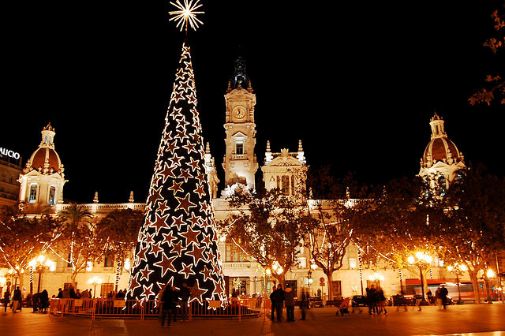
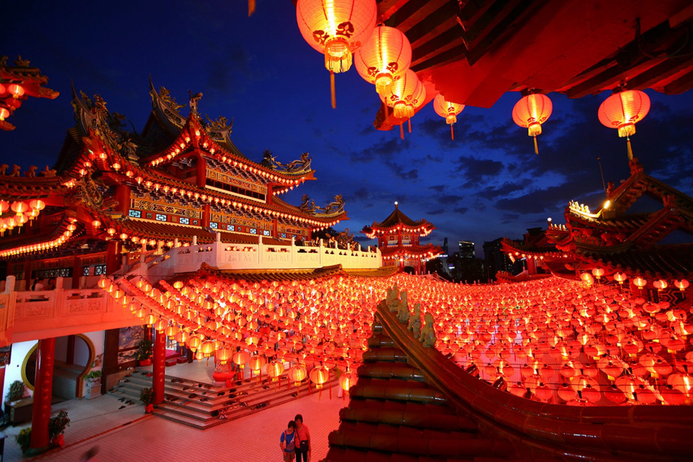

New year
How New Year is celebrated in different countries?
- Italian Santa Claus is Babbo Natale
- It is customary to throw old things out of the windows
- Dinners may include meals such as Cotechino (Italian sausage) and Lenticchie (lentils)
New Year in Italy

- At midnight people eat doce uvas (twelve grapes), one at each stroke of the clock
- There is a tradition in Spain to host a children’s parade on January 5 or Día de los Reyes Magos (Three Kings Day).
- In main cities people congregate in the plaza central (main square)
New Year in Spain
- Brazil’s New Year falls on the ‘Festa de Lemanjá’, a spiritual festival that honours the goddess of the sea
- In Drazil jumping seven waves will bring good luck in the coming year
- It is traditional to gather on the sands of Copacabana beach to see the sun rise – before going home to sleep for the whole day
New Year in Brazil
- Homes and entrance gates are decorated with ornaments made of pine, bamboo and plum trees
- It is a tradition to visit a shrine or temple
- Toshikoshi soba is eaten on the eve of New Years, while ozoni and osechi are enjoyed the actual day of
New Year in Japan

- Each time the New Year in China falls on different dates of the usual Gregorian calendar, between January 21 and February 20
- A year of the Ox will start on February 12th
- Red is the main color for the festival, as red is believed to be an auspicious color
New Year in China
- The first person who crosses a threshold of a home in the New Year should carry a gift for luck
- One of the most spectacular fire ceremonies that takes place today is held in Stonehaven
- The Highland custom of saining (or blessing) the house and livestock goes far back in time, but is still practised today in some households